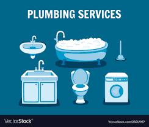

Joe the Plumber Full-service Plumbing and Heating:
Ask Joesph
If you don't ask, we can't help. Take a look at some of Joe's Top 5 FAQs. If you don't see your questions listed here, no worries, call (888) 555-HEAT anytime. And if Joe doesn't know, he knows who.
Ask Joe:
If you don't ask, we can't help. Take a look at some of Joe's Top 5 FAQs. If you don't see your questions listed here, no worries, call (888) 555-HEAT anytime. And if Joe doesn't know, he knows who.
1. How can I prevent my pipes from freezing?
2. If my pipes burst, what should I do to stop the flooding
3. My washing machine smells like a sewer, what can I do?
4. What size air conditioner do I need?
5. My hot water keeps running out. Do I need a larger water heater?
A1: Begin by insulating the pipes that are located on outside walls. And, if you have had previous problems with a freezing, leave a faucet trickling hot water.
A2: In the event a pipe bursts, turn off closest shut-off valve or your main water shut-off valve until a proffesional can come.
A3: Front loading washers sometimes develop mold around the thick gasket that seals the front door. Inspect the gasket itself and use bleach to disenfect.
A4: A load calculation must be performed on your home to determine the proper system size that meets all the physical requirments. Ultimantly, the size determination should be made by a qualified air conditioning specialists.
A5: There are many reasons why you may be running out of hot water. Before installing a larger heater, one of our technicians can analyze your options.
Give Us a Call.We would be proud to be of service. One call does it all!

With deep roots in the community, we're committed to helping our neighbors. Read More